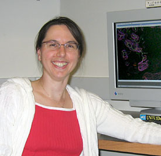

News Archives : 2007 : Rachelle Gaudet Awarded Klingenstein Fellowship
by Jim Henle
July 30, 2007
|  Rachelle Gaudet |
Many neurological diseases are channelopathies, i.e., diseases resulting from the malfunction of ion channels, including several forms of epilepsy. This made the project especially suitable for this Fellowship. The Klingenstein Fellowship Awards, from the Esther A. and Joseph Klingenstein Fund, Inc., were created "to support, in the early stages of their careers, young investigators in basic or clinical research that may lead to a better understanding of epilepsy." No more than ten Fellowships are awarded each year.
Specifically, the program focuses on areas within the neurosciences with a recognition of the "necessity to encourage a variety of new approaches". In Gaudet’s project, the three-dimensional structure of ion channels in different functional states will provide new insights into the relationships between their structures, functions and mechanisms of action. Gaudet remarks: "This understanding of the molecular mechanisms of ion channel regulation and gating is crucial to the development of therapies for many neurological diseases."
Gaudet expressed her gratitude and appreciation for the Award: "The neuroscience community has been very supportive of our efforts to determine structures of TRP channels, and it is an honor to receive financial support through a Klingenstein Fellowship. I'm really excited about this project on TRPM8 because we have already made great progress, and this new funding with few restrictions will allow us to really push it forward."